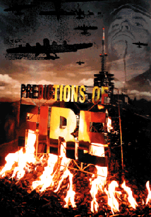

basekamp space > Events
Date: 08-July-2006 (This Saturday); 6.00 to 9.00 PM
Location: Basekamp space
(723 Chestnut St., 2nd floor, Philadelphia, PA 19106 usa)
Description: Special screening of "Predictions of Fire" (1996 documentary about the Slovenian art collective NSK). This screening accompanies the "East Art Map" project (see below) also at Basekamp throughout June and July 2006.

--
Dates: 03-June-2006 through 31-July-2006; Open during summer hours
(Tuesdays, Thursdays, & Saturdays; 12.00 - 4.00 PM)
Location: Basekamp space
(723 Chestnut St., 2nd floor, Philadelphia, PA 19106 usa)
Description: Video compilation of selected artworks included in the "East Art Map" project, by IRWIN (a group of five artists who make up the visual-arts component of the Slovenian art collective NSK).
--

Since 1983, the IRWIN artist group has been working with various media, from painting to public art, from sculptural works and installations to publishing. Following their "retro principle", the five-member-group utilizes and combines different motifs, symbols and signs from the fields of politics and art, which results in the transformation of their historical meaning and content, and in the re-contextualisation and deconstruction of their related ideologies.
Very often, basic information on what NSK is, when it was founded, what the NSK and Laibach philosophies are, and the like are required. To put it in a nutshell, NSK is in its structure a simple and yet complex mechanism which makes any precise explanation in a few words practically impossible. NSK began operating in 1984 as a large collective, a union of various groups brought together by their shared way of thinking and a similar way of expression through different media. The main NSK groups are: Laibach, Irwin, Noordung, New Collectivism Studio and the Department of Pure and Applied Philosophy, while there is a number of flexible subdivisions which emerge as the need arises and dissolve under their own inertia. Each of the groups primarily works within its medium, nevertheless their bonds are firm and fruitful. Members of the groups meet on a regular basis, they talk, discuss and plan major common campaigns, test aesthetic and other preferences, exchange ideas and contexts, travel together, etc.
--
This announcement is sent to basekamp email list subscribers. To be removed, please reply to this email with the heading 'unsubscribe'.
For a schedule of events or additional press information please call or send inquiries to:
projects@basekamp.com - (215) 592-7288

http://basekamp.com
BASEKAMP is a non commercial studio and exhibition space whose primary focus is to participate in the creation, facilitation and promotion of large scale collaborative projects by contemporary artists.
Philadelphia is an example of a city whose art-world is currently in the process of self-definition. We have seen this as an opportunity to use the city as a home base to invite domestic and international collaborative groups in a joint experiment to develop new models of relations within overlapping art communities.